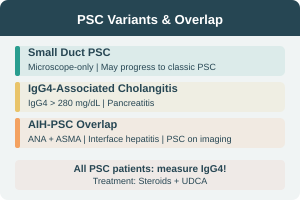

PSC — Differential Diagnosis & Variants
Differential Diagnosis
- Small duct PSC
- Autoimmune Pancreatitis (AIP)
- AIDS cholangiopathy
- IgG4-related sclerosing cholangitis
- Secondary sclerosing cholangitis
- Cholangiocarcinoma
Small Duct PSC
- Chronic cholestasis with PSC histology
- Normal cholangiogram
- May be early stage of classic PSC
- May progress to classic PSC or ESLD → LT
IgG4-Associated Cholangitis
- Focal or diffuse pancreatitis
- Pancreatic duct narrowing/dilatation
- IgG4 > 280 mg/dL
- Imaging findings of PSC
- Jaundice + pancreatitis → suspect
- All PSC patients should have IgG4 measured
AIH–PSC Overlap
- Cholangiographic findings of PSC + lab of AIH
- High ASMA & ANA
- Histology: interface hepatitis
- Bile duct abnormalities + cholestasis + fibrosis
